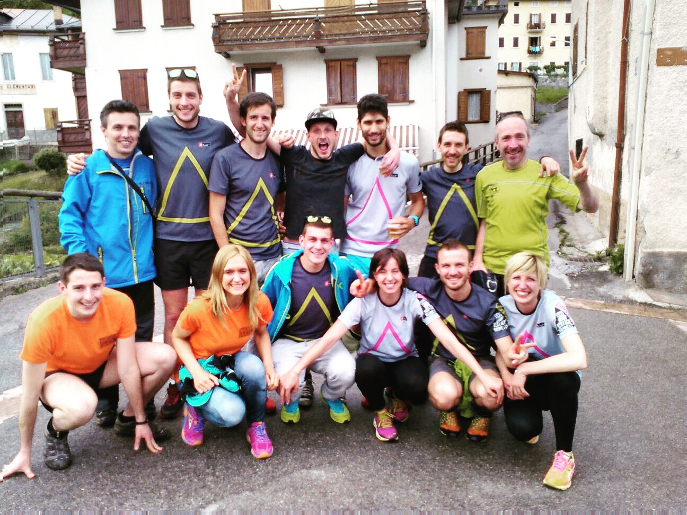

Home / Il club
Il club, dal 1973
Gruppo Marciatori Calalzo – Atletica Cadore: la società di riferimento per i podisti del Centro Cadore.
La nostra storia
Il Gruppo Marciatori Calalzo fu fondato nel 1973 da alcuni appassionati del podismo locale, capeggiati da Marte Gaggio. In breve tempo il Gruppo ottenne apprezzabili risultati in particolare nella corsa in montagna, dove occupa ancora oggi una posizione di eccellenza nel panorama provinciale e regionale.
Guidato dal presidente Marte Gaggio, nel 1980 a Firenze il sodalizio ha conquistato il titolo nazionale a squadre di corsa in montagna, e per tre volte il primo posto nella "24 ore di S. Martino", gara a squadre sulla pista di atletica di Belluno. Numerose le vittorie dei suoi atleti, individuali e di squadra, in staffette e gare a coppie.
Nel 2003 al nome storico si è aggiunto "Atletica Cadore": oggi siamo la società di riferimento per i podisti di tutto il Centro Cadore.
Teniamo molto ai giovani. Ogni anno, da aprile a novembre, alcuni dei nostri migliori atleti diventano allenatori per ragazzi dai 7 ai 18 anni: trovi tutto nella pagina Attività giovanili.
- 1973Nasce il Gruppo Marciatori Calalzo
- 1980Campioni italiani a squadre di corsa in montagna, a Firenze
- 2003Il nome diventa Gruppo Marciatori Calalzo – Atletica Cadore

Consiglio direttivo
- Mirko Da ViàPresidente
- Silvia GiacomelliVice presidente
- Giovanni VascellariConsigliere
- Luigi CianConsigliere
- Giovanni De BonConsigliere
- Manuel Da ColConsigliere
- Martina Festini PurlanPsicologa
- Sandra De Monte PangonResponsabile safeguarding
Documenti
- Codice di condottaModello di comportamento, art. 1–16
- Regolamento Km VerticaleEdizione 2025
- Regolamento Giro e Trail delle CosteEdizione 2026
Safeguarding. Per segnalazioni sulla tutela di atleti e minori scrivi a Sandra De Monte Pangon, responsabile safeguarding:
Altri risultati storici
- Sci alpinismo, stagione 2015-16Classifiche
- Sci alpinismo, stagione 2014-15Classifiche
- Sci alpinismo, stagione 2013-14Classifiche
- Corsa campestre CSI 2015-16, 5 prove e finale provincialeClassifiche